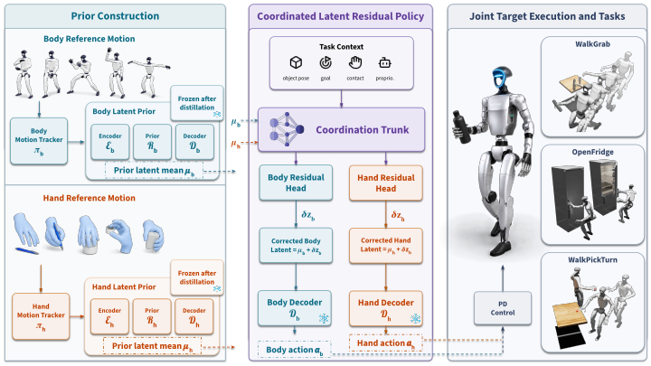

CoorDex: Coordinating Body-Hand Priors for Continuous Dexterous Humanoid Loco-Manipulation
Dexterous loco-manipulation on the move. CoorDex enables a humanoid equipped with high-DoF dexterous hands to perform continuous loco-manipulation tasks, including walk-grasp-carry, opening a fridge while stepping back, and walk-pick-turn.
Abstract
Humanoid loco-manipulation is often simplified as walking to an object, stopping to manipulate it, and then resuming locomotion. It also commonly relies on low-degree-of-freedom end effectors whose behavior is close to an open-close grasp primitive. We introduce CoorDex, a learning pipeline that converts high-dimensional body and dexterous hand control into coordinated latent residual control, enabling high-DoF dexterous loco-manipulation. Starting from simulated whole-body and hand demonstrations, CoorDex trains privileged motion-tracking teachers for the humanoid body and dexterous hand, distills them into proprioception-conditioned latent priors, and uses the frozen priors as the action space for downstream residual reinforcement learning. A Coordinated Latent Residual Policy composes these priors through shared task context and separate body-hand residual heads, preserving natural whole-body motion while improving finger-level contact accuracy. CoorDex enables a Unitree G1 humanoid with a 20-DoF Wuji hand to perform several high-DoF dexterous loco-manipulation skills, including non-stop bottle grasping and carrying, fridge-door opening, and cube pick-and-turn. Controlled ablations on the walk-grasp task show that direct joint-space PPO and unstructured latent prediction fail under the same reward budget, while the proposed latent-prior interface and coordinated residual structure make high-dimensional contact-rich loco-manipulation trainable.
Method

Overview of CoorDex. Body and hand reference motions are tracked by privileged teachers and distilled into separate proprioception-conditioned latent priors. During downstream RL, a coordinated residual policy uses task context and prior means to predict body and hand latent residuals. The frozen decoders map corrected latents to joint-position targets for loco-manipulation.
Real-world demos
A Unitree G1 humanoid with a 7-DoF Dex3-1 dexterous hand.
Simulation
A Unitree G1 humanoid with a 20-DoF Wuji dexterous hand, trained in Isaac Lab.
Action-Space Comparison on WalkGrab
Under the same RL environment setting, only our Coordinated Latent Residual Policy learns the continuous contact-rich walk-grasp-carry task.